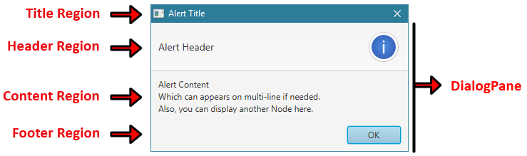
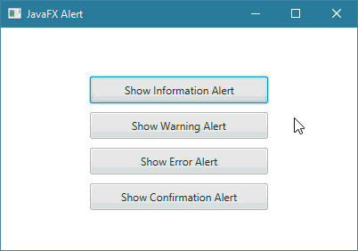
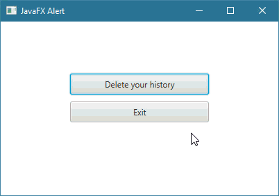

JavaFXالكلاس Alert
مقدمة
الكلاس Alert يستخدم لإظهار نافذة ثانوية ( Dialog ) جاهزة أمام المستخدم.
في العادة نستخدم نوافذ ثانوية في التطبيقات لأسباب عديدة منها: لتحذير المستخدم أو إعلامه بشيء ما, لسؤاله إذا كان موافقاً على أمر ما أم لا, لنطلب منه إدخال معلومة ما, لنطلب منه تسجيل الدخول, لإظهار نتيجة عملية بحث ما إلخ..
مصطلحات تقنية
في البداية عليك معرفة أنه لتحديد نوع النافذة التي ستظهر, فإننا نستخدم إحدى الثوابت الموجودة في الكلاس AlertType.
بالنسبة للنوافذ التي يمكن إظهارها للمستخدم فإنه يطلق عليها التسميات التالية:
| المصطلح |
معناه |
| Information Dialog |
عبارة عن نافذة منبثقة تستخدم لإعلام المستخدم بشيء ما, و البعض يسميها Message Dialog.
لإظهار نافذة من هذا النوع يجب تمرير الثابت AlertType.INFORMATION في كونستركتور الكائن Alert. |
| Warning Dialog |
عبارة عن نافذة منبثقة تستخدم لتنبيه المستخدم حول أمر ما.
لإظهار نافذة من هذا النوع يجب تمرير الثابت AlertType.WARNING في كونستركتور الكائن Alert. |
| Error Dialog |
عبارة عن نافذة منبثقة تستخدم لتنبيه المستخدم حول وجود خطأ.
لإظهار نافذة من هذا النوع يجب تمرير الثابت AlertType.ERROR في كونستركتور الكائن Alert. |
| Confirmation Dialog |
عبارة عن نافذة منبثقة تستخدم لسؤال المستخدم إذا كان موافقاً على شيء ما أم لا.
لإظهار نافذة من هذا النوع يجب تمرير الثابت AlertType.CONFIRMATION في كونستركتور الكائن Alert. |
طريقة التعامل معه
في حال أردنا إظهار نافذة ثانوية فيجب أن نفعل التالي:
نقوم بإنشاء كائن من الكلاس Alert, و في الكونستركتور نمرر ثابت من الكلاس AlertType لنحدد نوع النافذة التي نريد إظهارها.
نستدعي الدالة setTitle() من الكائن Alert لوضع عنوان في Stage النافذة.
نستدعي الدالة setHeaderText() من الكائن Alert لوضع عنوان رئيسي بداخل النافذة و الذي سيظهر بأحرف كبيرة.
نستدعي الدالة setContentText() من الكائن Alert لوضع النص الذي سيظهر في النافذة بأحرف صغيرة.
لإظهار النافذة نستدعي الدالة show() أو showAndWait() من الكائن Alert و ستعرف لاحقاً ما هو الفرق بينهما.
بناء الكلاس Alert
public class Alert
extends Dialog<ButtonType>
مكونات الـ Alert
النافذة التي نحصل عليها بواسطة الكلاس Alert تتألف من 4 أجزاء أساسية كما في الصورة التالية.
و جميع هذه الأجزاء في الواقع موضوعة في كائن من كلاس إسمه DialogPane.

أشكال الـ Alert
المثال التالي يظهر 4 أشكال مختلفة من النوافذ التي يمكن الحصول عليها بواسطة الكلاس Alert.
فعلياً, عند تشغيل البرنامج سيظهر لك Alert Information. عند إغلاقه سيظهر لك Alert Warning. عند إغلاقه سيظهر لك Alert Error. عند إغلاقه سيظهر لك Alert Confirmation.
مثال
Main.java
import javafx.application.Application;
import javafx.scene.control.Alert;
import javafx.scene.control.Alert.AlertType;
import javafx.stage.Stage;
public class Main extends Application {
@Override
public void start(Stage stage) {
// مع تحديد محتواه و من ثم قمنا بإظهاره INFORMATION حددنا أنه يمثل نافذة من النوع Alert هنا قمنا بإنشاء كائن من الكلاس
Alert alertInformation = new Alert(AlertType.INFORMATION);
alertInformation.setTitle("Information Alert Title");
alertInformation.setHeaderText("Information Alert Header");
alertInformation.setContentText("Information Alert Content \nWhich can appears on multi-line if needed");
alertInformation.showAndWait();
// مع تحديد محتواه و من ثم قمنا بإظهاره WARNING حددنا أنه يمثل نافذة من النوع Alert هنا قمنا بإنشاء كائن من الكلاس
Alert alertWarning = new Alert(AlertType.WARNING);
alertWarning.setTitle("Warning Alert Title");
alertWarning.setHeaderText("Warning Alert Header");
alertWarning.setContentText("Warning Alert Content \nWhich can appears on multi-line if needed");
alertWarning.showAndWait();
// مع تحديد محتواه و من ثم قمنا بإظهاره ERROR حددنا أنه يمثل نافذة من النوع Alert هنا قمنا بإنشاء كائن من الكلاس
Alert alertError = new Alert(AlertType.ERROR);
alertError.setTitle("Error Alert Title");
alertError.setHeaderText("Error Alert Header");
alertError.setContentText("Error Alert Content \nWhich can appears on multi-line if needed");
alertError.showAndWait();
// مع تحديد محتواه و من ثم قمنا بإظهاره CONFIRMATION حددنا أنه يمثل نافذة من النوع Alert هنا قمنا بإنشاء كائن من الكلاس
Alert alertConfirmation = new Alert(AlertType.CONFIRMATION);
alertConfirmation.setTitle("Confirmation Alert Title");
alertConfirmation.setHeaderText("Confirmation Alert Header");
alertConfirmation.setContentText("Confirmation Alert Content \nWhich can appears on multi-line if needed");
alertConfirmation.showAndWait();
}
// هنا قمنا بتشغيل التطبيق
public static void main(String[] args) {
launch(args);
}
}
•ستظهر لك النافذة التالية عند التشغيل.
•بمجرد أن تغلق النافذة السابقة, ستظهر لك النافذة التالية عند التشغيل.
•بمجرد أن تغلق النافذة السابقة, ستظهر لك النافذة التالية عند التشغيل.
•بمجرد أن تغلق النافذة السابقة, ستظهر لك النافذة التالية عند التشغيل.
ملاحظة
لو استخدمنا الدالة show() بدلاً من الدالة showAndWait() عند إظهار النوافذ لظهروا كلهم في وقت واحد مع إمكانية التعامل مع نافذة واحدة في كل مرة.
معلومة تقنية
تستطيع إضافة أنواع أزرار أخرى في النافذة في المنطقة التي يقال لها Footer Region بشرط أن لا تكون النافذة أصلاً تحتوي على هذا النوع من الأزرار.
فمثلاً لا تستطيع وضع زرين Open في النافذة. لا تقلق لأن هذا الأمر ستراه لاحقاً في الأمثلة ضمن المثال الثاني بالتحديد.
كونستركتورات الكلاس Alert
الجدول التالي يحتوي على كونستركتورات الكلاس Alert.
| الكونستركتور مع تعريفه |
Alert(Alert.AlertType alertType)
ينشئ كائن من الكلاس Alert يمثل نافذة ثانوية ( Dialog ) لها نوع محدد.
مكان الباراميتر alertType نمرر إحدى ثوابت الكلاس AlertType التي تمثل نوع الأيقونة و الأزرار التي ستظهر في النافذة. |
Alert(Alert.AlertType alertType, String contentText, ButtonType... buttons)
ينشئ كائن من الكلاس Alert يمثل نافذة ثانوية ( Dialog ) لها نوع محدد.
مكان الباراميتر alertType نمرر إحدى ثوابت الكلاس AlertType التي تمثل نوع الأيقونة و الأزرار التي ستظهر في النافذة. مكان الباراميتر contentText نمرر النص الذي نريده أن يظهر في النافذة في المكان الذي يقال له Header Region. مكان الباراميتر buttons نمرر ثابت أو أكثر من الكلاس ButtonType لإضافة أزرار أخرى في أسفل النافذة في المكان الذي يقال له Footer Region.
|
دوال الكلاس Alert
الجدول التالي يحتوي على دوال الكلاس Alert الأكثر إستخداماً.
| الدالة مع تعريفها |
public final void setTitle(String title)
تستخدم لتحديد عنوان لكائن الـ Alert الذي قام باستدعائها, و الذي سيظهر في المنطقة التي يقال لها Title Region.
مكان الباراميتر title نمرر النص الذي نريد وضعه. |
public final void setHeaderText(String headerText)
تستخدم لتحديد النص الذي سيظهر بجانب الأيقونة في كائن الـ Alert الذي قام باستدعائها, و الذي سيظهر في المنطقة التي يقال لها Header Region.
مكان الباراميتر headerText نمرر النص الذي نريد وضعه. |
public final void setContentText(String contentText)
تستخدم لتحديد النص الذي سيظهر فوق الأزرار في كائن الـ Alert الذي قام باستدعائها, و الذي سيظهر في المنطقة التي يقال لها Content Region.
مكان الباراميتر contentText نمرر النص الذي نريد وضعه. |
public final void show()
تستخدم لإظهار كائن الـ Alert الذي قام باستدعائها و هي لا ترجع قيمة.
لذلك في حال كنت تريد إظهار أكثر من نافذة وراء بعض فلا تقم باستخدام هذه الدالة لأنها ستفتح كل النوافذ مع بعض. |
public final Optional<ButtonType> showAndWait()
تستخدم لإظهار كائن الـ Alert الذي قام باستدعائها و تنتظر المستخدم حتى يغلقها لترجع قيمة تمثل نوع الزر الذي تم النقر عليه حتى تم إغلاقها.
نوع الزر الذي ترجعه عبارة عن إحدى الثوابت الموجودة في الكلاس ButtonType. |
public final void setResizable(boolean resizable)
تستخدم لجعل المستخدم قادر على تكبير أو تصغير حجم كائن الـ Alert الذي قام باستدعائها.
مكان الباراميتر resizable نمرر لها القيمة true إذا أردنا جعل المستخدم قادر على تكبير أو تصغير حجم كائن الـ Alert. |
public final ButtonType getResult()
ترجع ثابت من الكلاس ButtonType و نوعه أيضاً ButtonType يمثل نوع الزر الذي تم النقر عليه حتى تم إغلاق كائن الـ Alert الذي قام باستدعائها. |
public final void setStyle(String value)
تستخدم لتعديل تصميم كائن الـ Alert الذي قام بإستدعائها.
مكان الباراميتر value يمكنك تمرير إسم و قيمة أي خاصية تريد تعديلها في كائن الـ Alert بأسلوب لغة CSS لإظهاره بالشكل الذي تريده. |
أمثلة شاملة
المثال الأول
المثال التالي يعلمك طريقة إظهار Alert عند النقر على Button.
كل Button يظهر Alert مختلف عند النقر عليه.

شاهد المثال »
المثال الثاني
المثال التالي يعلمك طريقة تحديد أنواع الأزرار التي تريدها أن تظهر في الـ Alert.
إضافةً إلى ذلك ستتعلم كيف تنفذ أوامر معينة بناءاً على كل زر موجود في الـ Alert في حال قام المستخدم بالنقر عليه.

شاهد المثال »

 محرر الويب
محرر الويب نظام الألوان
نظام الألوان محول الوحدات
محول الوحدات محلل عناوين الشبكات
محلل عناوين الشبكات